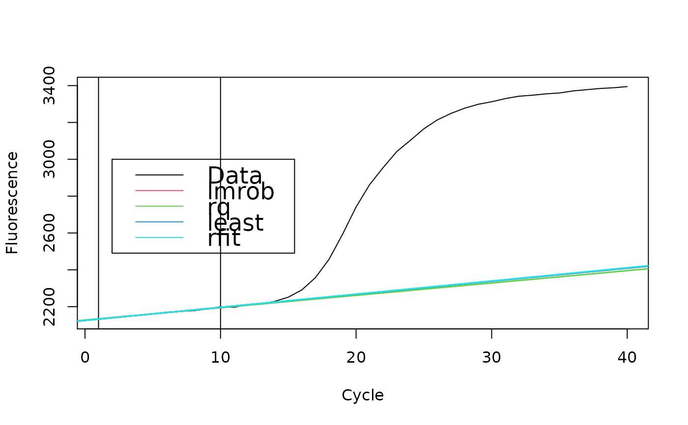

lm.coefs.RdComputes linear model using the robust linear regression.
lm.coefs(x, y, method.reg)
| x | a vector of ordinate values. |
|---|---|
| y | a vector of abscissa values. |
| method.reg | defines the method ("rfit", "lmrob", "rq", "least") for the linear regression. |
lm.coefs is a convenient wrapper around few functions performing
normal (least squares) and robust linear regression. If the robust linear
regression is impossible, lm.coefs will give a warning and perform linear
regression using the least squares method.
This function can be used to calculate the background of an amplification
curve. The coefficients of the analysis can be used for a trend based
correction of the entire data set.
A data frame with one column and two rows representing coefficients of the linear model.
Stefan Roediger, Michal Burdukiewicz
method <- c("lmrob", "rq", "least", "rfit") for (i in 1:4) { tmp <- lm.coefs(VIMCFX96_69[1:10, 1], VIMCFX96_69[1:10, 2], method.reg = method[i]) abline(a = tmp[1, 1], b = tmp[2, 1], col = i + 1, lwd = 1.5) }